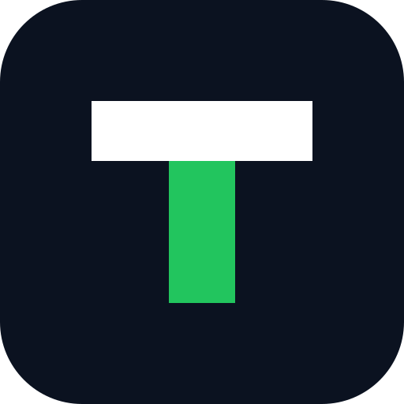
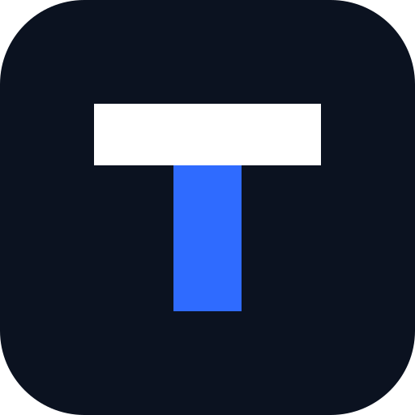
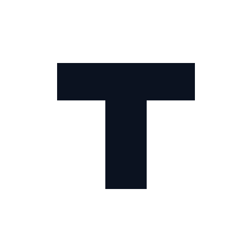

Строгий векторный знак: геометрическая монограмма, один акцент, крупная типографика. Пиксель-арт и аркадные мотивы убраны. Ниже — три направления, размеры под интерфейс и печать.


горизонтальный — шапка сайта, презентация, письмо
вертикальный — обложка, квадратный аватар, печать
если знак не нужен: работают буквы и точка-акцент

моно, белый — тёмные фоны, вышивка, гравировка

моно, графит — документы, печать, факс-качество